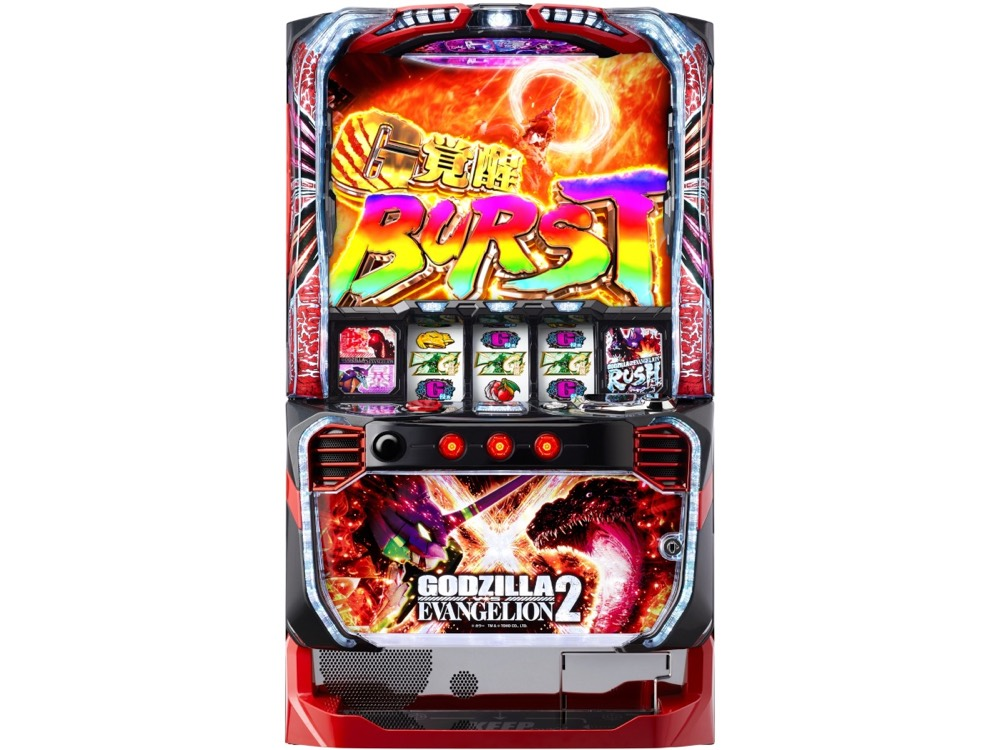

Lパチスロ ゴジラ対エヴァンゲリオン 2
2種類のBONUSを越え、G覚醒RUSHへ。
- 導入
- 2026年11月
- メーカー
- ビスティ
- 分類
- パチスロ
主要スペック
2026年11月2日導入のゲーム数管理型スマスロ。2種類の約73枚BONUS、専用ATジャッジ、ゴジエヴァアタック、10倍上乗せ、決戦カイザーギドラ、G覚醒RUSHを一連の専用演出で体験できます。
- エヴァBONUS後は3G＋α・AT期待度約41%
- ゴジラBONUS後は5G＋α・AT期待度約64%
- 決戦カイザーギドラは4G・突破期待度約66%
Lパチスロ ゴジラ対エヴァンゲリオン 2の見どころと計算条件
2026年11月2日導入のゲーム数管理型スマスロ。2種類の約73枚BONUS、専用ATジャッジ、ゴジエヴァアタック、10倍上乗せ、決戦カイザーギドラ、G覚醒RUSHを一連の専用演出で体験できます。
スマスロ ゴジエヴァ2を数字で早分かり
BONUS初当りからゴジエヴァRUSH、G覚醒RUSHまでの流れと、設定ごとの結果差を固定レートで比較できます。
30秒で分かるスマスロ ゴジエヴァ2
約73枚の2種類のBONUSから専用ジャッジを経て、50〜600Gのゲーム数管理AT、怪獣索敵、4Gバトル、10倍上乗せ、4Gの上位CZへ進む段階型です。
こんな遊び方に向いている
- エヴァ約41%・ゴジラ約64%のAT当落を分けて試したい
- PUSHで10倍上乗せのゲーム数を開きたい
- 4G決戦と100G以上のG覚醒RUSHを体験したい
遊ぶ前に確認したいこと
- BONUS比率と通常AT中の各ルート出現率は体験用代表値
- 決戦カイザーギドラ突破期待度は約66%
- G覚醒RUSH終了後は4G決戦と50G引き戻しを表示
BONUSとAT初当りの設定差
疑似BONUSは設定1約1/234.2から設定6約1/195.0、AT『ゴジエヴァRUSH』は設定1約1/460.5から設定6約1/355.5です。
START時に設定1〜6を均等抽選し、選ばれた設定のBONUS・AT初当り・出玉率を使用します。設定は最終結果と機種別ランキングに表示します。
集結バトルと2種類のBONUS
集結バトルは9G＋α・成功期待度約50%のBONUS当選CZです。通常時はレア役、G侵食役後の変異、100G・250G・400G以降150Gごとの規定ゲーム数からBONUSを目指します。
エヴァンゲリオンBONUSとゴジラBONUSはいずれも平均約73枚。前者は3G＋αの『初号機VS魏怒羅零号機』でAT期待度約41%、後者は5G＋αの『ゴジラチャレンジ』で約64%です。サイトでは公開BONUS確率とAT確率に近づくよう、BONUS比率を体験用の代表値57%対43%で抽選します。
ゴジエヴァアタックとゲーム数管理AT
AT突入時は2Gのゴジエヴァアタックで初期50〜600Gを決定します。1G目の成立役でエヴァンゲリオン・モスラ・ゴジラを決め、2G目で初期ゲーム数を開きます。
ゴジエヴァRUSHは純増約5.2枚/G。レア役や変異でゲーム数を上乗せし、上乗せ後のブレイク演出から怪獣索敵ZONE、IMPACT BATTLE、震撃CHANCEなどへ分岐します。
怪獣索敵・IMPACT BATTLE・10倍上乗せ
怪獣索敵ZONEは10G＋αでIMPACT BATTLE移行率約52%。IMPACT BATTLEは4G・勝利期待度約44%、勝利すると震撃CHANCEへ進みます。
震撃CHANCEは4G＋α・10倍上乗せ期待度約43%。成功時の一部は4G＋αの震撃連鎖へ入り、震撃ジャッジ成功のたびに10倍上乗せと4G再セットを繰り返します。サイトではPUSHでルート、成功、最終上乗せゲーム数を順番に表示します。
決戦カイザーギドラからG覚醒RUSHへ
決戦カイザーギドラは4G・突破期待度約66%。AT最終ゲーム、1000枚以降500枚ごとの抽選、エンディング後、上位AT終了後などから突入し、勝利でG覚醒RUSHへ進みます。
G覚醒RUSHは純増約5.2枚/G・100G以上。初回は2GのG覚醒アタックで初期ゲーム数を決め、勝利時の一部では30G＋αのG覚醒バーストへ。サイトでは上位終了ごとに4G決戦をPUSHで判定し、敗北後は50Gの引き戻し区間を表示します。
固定レートと収支の条件
- 約30G/50枚・1,000円46枚貸し・5.2枚交換で固定
- 設定1基準の平均AT投資目安は約16,700円
- コイン単価は設定1の参考値約3.7円として表示
- 19,000枚到達時はコンプリート表示
平均Gと投資目安の計算
掲載するゴジエヴァRUSH初当り約1/460.5は設定1基準です。当サイトでは50枚あたり30G、1,000円46枚貸しの固定条件から、設定1基準の平均投資目安を約16,700円と計算します。
シミュレーターでは設定1〜6を均等抽選します。設定1〜6で公開されている初当り値を個別に使います。公開されていない特化ゾーン・上位到達率の設定差は加えません。 換金は5.2枚交換で固定し、結果とランキングに設定を表示します。
シミュレーション結果の見方
当るまでBONUS初当り・ゴジエヴァRUSHまでのゲーム数
設定設定1・2・3・4・5・6から抽選された今回の設定
上位到達決戦カイザーギドラとG覚醒RUSHへの到達
最終収支差枚と5.2枚交換の収支目安
結果は自動で「マイ記録」に保存され、同じ機種を何回試したか、最高収支、勝率をあとから確認できます。
簡易シミュレーターについて
BONUS初当り・ゴジエヴァRUSH・G覚醒RUSHの流れを固定条件で体験できます。JavaScriptを有効にすると、この位置にシミュレーター、演出、マイ記録、機種別ランキングが表示されます。
結果は娯楽・確率理解のための参考表示です。金銭的価値や交換価値はなく、実際の勝敗や収支を保証しません。18歳未満の方の利用はお控えください。
スマスロ ゴジエヴァ2のよくある質問
スマスロ ゴジエヴァ2はどんな台？
2026年11月2日導入のゲーム数管理型スマスロ。 エヴァBONUS後は3G＋α・AT期待度約41%が主な確認ポイントです。
スマスロ ゴジエヴァ2の平均投資目安は？
設定1基準のゴジエヴァRUSH初当り約1/460.5と、50枚あたり30G・46枚貸しの固定条件から、平均16,700円を目安として表示します。実際の設定や遊技状況で結果は変わります。
設定とゲームの流れはどう抽選する？
開始時に設定1・2・3・4・5・6から1つを均等抽選し、BONUS初当り、ゴジエヴァRUSH、決戦カイザーギドラ、G覚醒RUSHの順で到達を判定します。設定は最終結果とランキングに表示します。
収支はどう計算する？
1,000円46枚貸し・5.2枚交換の固定条件で投資、換金、収支目安を計算します。実店舗の再プレイ、持ちメダル、端数処理は含みません。